vignettes/cs2_vignette.Rmd
cs2_vignette.RmdThis vignette demonstrates how to use serosolver to
infer antibody kinetics and historical attack rates from cross-sectional
haemagglutination inhibition (HI) titre data measured against multiple
influenza A/H3N2 strains. Unlike Case Study 1, where longitudinal
samples provide information about changes in antibody levels over time,
each individual here has one sampling time. The antibody measurements
against multiple, antigenically related viruses provide information
about the timing of previous infections.
The data are from a serosurvey in Guangzhou, China, collected in 2009 [1]. The analysis uses an annual infection-history resolution and an antigenic map based on Fonville et al. The model estimates long-term antibody kinetics and annual attack rates while fixing the short-term kinetics parameters, which are not well identified by these cross-sectional data alone.
The vignette covers data preparation, antigenic-map construction, model assumptions and priors, fitting and checking the model, and simulation recovery. MCMC chains are written to the Case Study 2 folder when a fit is needed; subsequent renders read those chains instead of refitting the model.
The data used in this analysis are haemagglutination inhibition (HI) titres against multiple influenza A/H3N2 strains, representing viruses which have circulated since A/H3N2 first emerged in 1968. All samples were taken in 2009, and infections are inferred at an annual resolution. The raw data are in a wide format, providing the highest two-fold dilution of serum at which haemagglutination is inhibited.
sample_year <- 2009
## Read in the raw wide-format data.
raw_dat_path <- file.path(case_study_dir, "Fluscape_HI_data.csv")
raw_dat <- read.csv(raw_dat_path, stringsAsFactors = FALSE)
## Add an index for each individual before converting to long format.
raw_dat$individual <- seq_len(nrow(raw_dat))
## Convert the titre data to long format.
melted_dat <- reshape2::melt(
raw_dat,
id.vars = c("individual", "Age"),
variable.name = "biomarker_id",
value.name = "measurement"
)
## Extract the year represented by each virus column.
melted_dat$biomarker_id <- as.numeric(
sub("HI.H3N2.", "", melted_dat$biomarker_id, fixed = TRUE)
)
## Remove missing measurements and convert HI titres to log2 units.
melted_dat <- melted_dat[complete.cases(melted_dat), ]
melted_dat$measurement[melted_dat$measurement == 0] <- 5
melted_dat$measurement <- log2(melted_dat$measurement / 5)
## Convert age at sampling to birth time, and record the common sample time.
antibody_data <- melted_dat %>%
transmute(
individual,
birth = sample_year - Age,
sample_time = sample_year,
biomarker_id,
measurement,
repeat_number = 1L,
biomarker_group = 1L
)
## Validate the antibody data before fitting.
antibody_data <- check_data(antibody_data)The resulting data contain one observation for each measured individual-virus combination. The measurement scale is log2 HI titre relative to a titre of 5, so the lowest recorded titre becomes zero. All samples were collected in 2009; the possible infection times run from the emergence of A/H3N2 in 1968 through the sample year.
## Summarise the measurements and the observed virus panel.
range(antibody_data$measurement)
#> [1] 0 8
table(antibody_data$biomarker_id)
#>
#> 1968 1975 1979 1989 1995 2002 2003 2005 2008
#> 151 151 151 151 151 151 151 151 151
## View the data in the format used by the model.
plot_antibody_data(
antibody_data,
possible_exposure_times = 1968:2009,
n_indivs = 16,
study_design = "cross-sectional"
) + facet_wrap(~ individual, ncol = 4)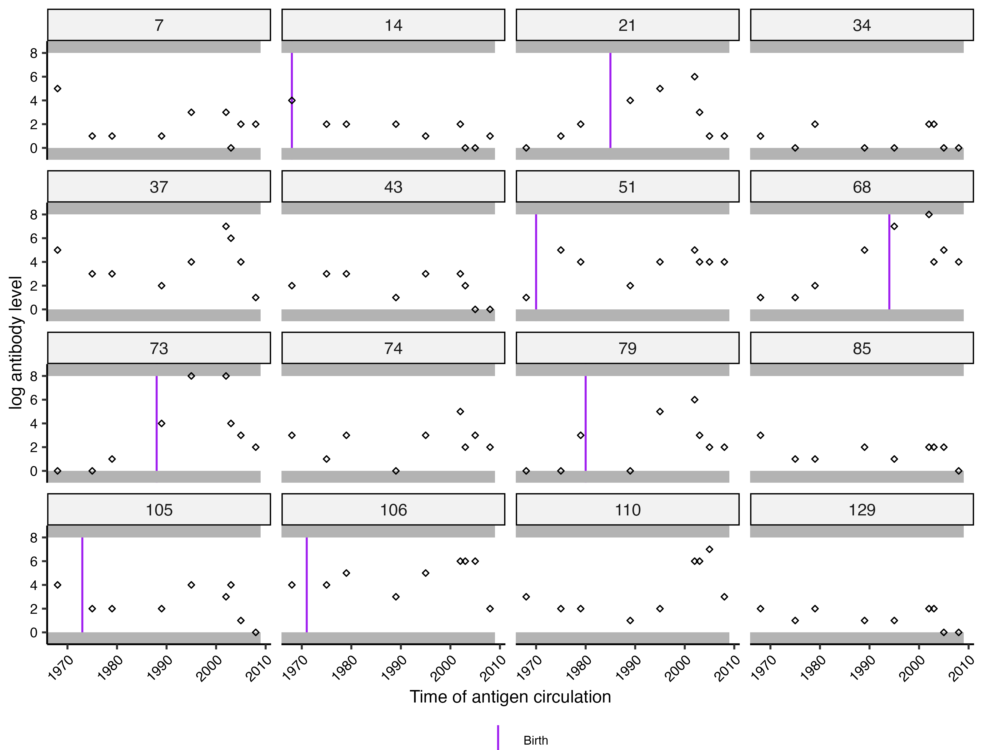
Given that this analysis uses titres from multiple, antigenically related viruses, it is necessary to define an antigenic map describing the antigenic distance between all of the viruses here. We use coordinates based on the antigenic map created by Fonville et al. Generating the antigenic map involves fitting a smoothing spline through provided coordinates to give a representative virus for each time point (in this case, each year) that an individual could be infected. This also supplies antigenic coordinates for years for which no measured virus is available.
The point labels show the year of circulation for each virus, with the antigenic coordinates interpolated from the provided data.
## Read the approximate antigenic coordinates.
antigenic_coords_path <- file.path(case_study_dir, "fonville_map_approx.csv")
antigenic_coords <- read.csv(antigenic_coords_path, stringsAsFactors = FALSE)
virus_key <- c(
"HK68" = 1968, "EN72" = 1972, "VI75" = 1975, "TX77" = 1977,
"BK79" = 1979, "SI87" = 1987, "BE89" = 1989, "BJ89" = 1989,
"BE92" = 1992, "WU95" = 1995, "SY97" = 1997, "FU02" = 2002,
"CA04" = 2004, "WI05" = 2005, "PE06" = 2006
)
antigenic_coords$Strain <- unname(virus_key[antigenic_coords$Strain])
antigenic_map <- generate_antigenic_map_flexible(antigenic_coords)
antigenic_map <- antigenic_map[antigenic_map$inf_times <= sample_year, ]
possible_exposure_times <- antigenic_map$inf_times
ggplot(antigenic_map) +
geom_point(aes(x = x_coord, y = y_coord)) +
geom_text(aes(x = x_coord, y = y_coord, label = inf_times), vjust = -0.5) +
theme_minimal() +
labs(title = "Antigenic map", x = "Antigenic coordinate 1", y = "Antigenic coordinate 2")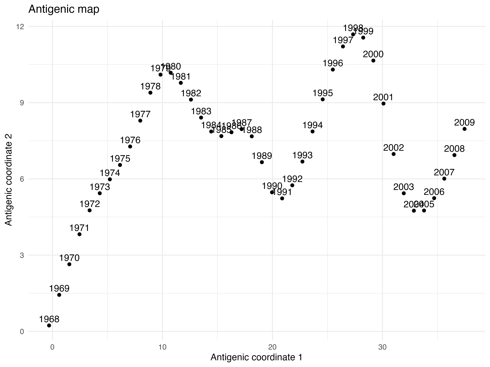
The parameter table controls which parameters are estimated or fixed,
their starting values, and their allowable ranges. With one sample per
individual, the short-term antibody response is not well separated from
the timing of infection. We therefore estimate long-term boosting,
cross-reactivity, antigenic seniority, and observation error, while
fixing the short-term parameters at zero. This case study uses the
default linear waning form; exponential waning is selected through a
fixed exponential_waning row in par_tab, as
described in the advanced features
vignette.
## The same starting parameter table is used in Case Study 1.
data(example_par_tab)
par_tab <- example_par_tab
## Estimate long-term parameters and observation error.
par_tab[par_tab$names %in% c("boost_long", "cr_long", "antigenic_seniority", "obs_sd"), "fixed"] <- 0
## Fix short-term kinetics parameters, which are not well identified here.
short_term_pars <- c("boost_short", "wane_short", "cr_short", "wane_long")
par_tab[par_tab$names %in% short_term_pars, "fixed"] <- 1
par_tab[par_tab$names %in% short_term_pars, "values"] <- 0
## Set the delay from infection to peak response to zero for the annual model.
par_tab[par_tab$names == "boost_delay", "values"] <- 0
## Match the bounded observation model to the transformed data.
par_tab[par_tab$names == "min_measurement", c("values", "lower_bound", "upper_bound")] <- 0
par_tab[par_tab$names == "max_measurement", c("values", "lower_bound", "upper_bound")] <- max(antibody_data$measurement)
## Check the parameter table before fitting.
par_tab <- check_par_tab(
par_tab,
mcmc = TRUE,
possible_exposure_times = possible_exposure_times,
version = 2
)The assumed antibody kinetics can be inspected before fitting:
plot_antibody_model(
pars = par_tab,
infection_history = possible_exposure_times[c(1, 3, 13, 18, 28, 38)],
antigenic_map = antigenic_map,
times = possible_exposure_times
)[[2]]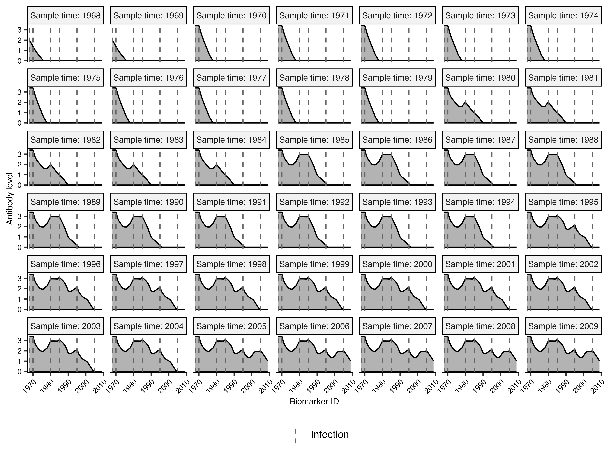
serosolver is a Bayesian model, so prior distributions
must be specified for the model parameters. Prior predictive output
helps assess whether these assumptions produce plausible antibody
responses and infection rates before the data are used.
The prior function below follows the weak regularising priors used in Case Study 1: standard normal priors for any stratification coefficients, a log-normal prior for the antibody boost, weak Beta priors for bounded parameters, and a broad log-normal prior for observation error. The infection-history prior is set to a modal annual attack rate of around 15%, with relatively high variance.
## Set the prior mode for annual attack rates.
ar_priors <- find_beta_prior_mode(0.15, 4)
par_tab[par_tab$names == "infection_model_prior_shape1", "values"] <- ar_priors$shape1
par_tab[par_tab$names == "infection_model_prior_shape2", "values"] <- ar_priors$shape2
## Define priors for the free antibody-model parameters.
prior_func <- function(par_tab) {
par_names <- par_tab$names
coef_pars <- which(grepl("coef", par_names))
function(pars) {
names(pars) <- par_names
## Weak prior for any stratification coefficients, as in Case Study 1.
prior_p <- sum(dnorm(pars[coef_pars], 0, 1, log = TRUE))
## Weak priors for the free antibody-model parameters.
prior_p <- prior_p + dlnorm(pars["boost_long"], log(2), 0.5, log = TRUE)
prior_p <- prior_p + dbeta(pars["cr_long"], 1, 10, log = TRUE)
prior_p <- prior_p + dbeta(pars["antigenic_seniority"], 1, 10, log = TRUE)
prior_p <- prior_p + dlnorm(pars["obs_sd"], log(1), 0.5, log = TRUE)
prior_p
}
}The prior predictive antibody-model plot is available from the returned object:
prior_res$plot_antibody_model + coord_cartesian(ylim=c(0,8))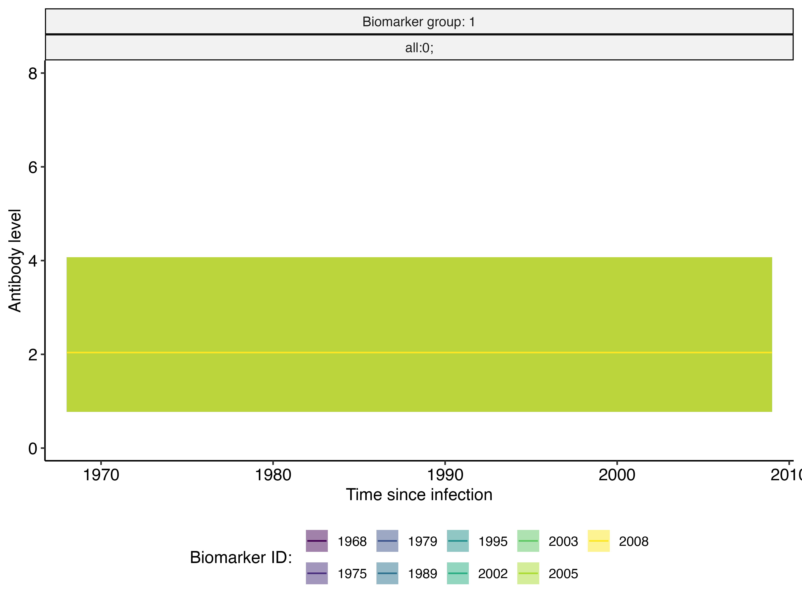
serosolver
The main serosolver() call uses the antibody data,
antigenic map, parameter table, and possible exposure times to estimate
the posterior distribution of the antibody-model parameters and
infection histories. The MCMC chains are saved to disk together with a
progress text file and settings file.
mcmc_pars <- c(
adaptive_iterations = 100000,
iterations = 200000,
thin = 100,
thin_inf_hist = 2000,
save_block = 1000,
proposal_inf_hist_time_prop = 1,
proposal_inf_hist_indiv_prop = 1,
proposal_inf_hist_group_swap_ratio = 0.8,
proposal_inf_hist_group_swap_prop = 1
)
res <- serosolver(
par_tab = par_tab,
antibody_data = antibody_data,
antigenic_map = antigenic_map,
possible_exposure_times = possible_exposure_times,
filename = mcmc_file,
prior_func = prior_func,
data_type = "discrete",
n_chains = 3,
parallel = TRUE,
mcmc_pars = mcmc_pars,
verbose = TRUE
)MCMC diagnostics assess whether the chains have converged to a common
posterior distribution and whether the effective sample size is
sufficient after accounting for autocorrelation. The criteria used here
follow typical Bayesian modelling practice, although the less efficient
sampler used by serosolver means that we generally use
somewhat more relaxed criteria for
and effective sample size than would be expected from a Stan model. The
Stan
reference manual is a useful general resource.
## MCMC convergence diagnostics.
print(res$all_diagnostics$p_thetas[[1]] +
ggplot2::theme(axis.text.x = ggplot2::element_text(angle = 45, hjust = 1)))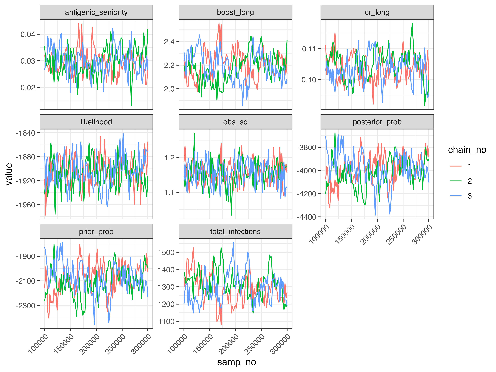
print(res$all_diagnostics$p_thetas[[2]] +
ggplot2::theme(axis.text.x = ggplot2::element_text(angle = 45, hjust = 1)))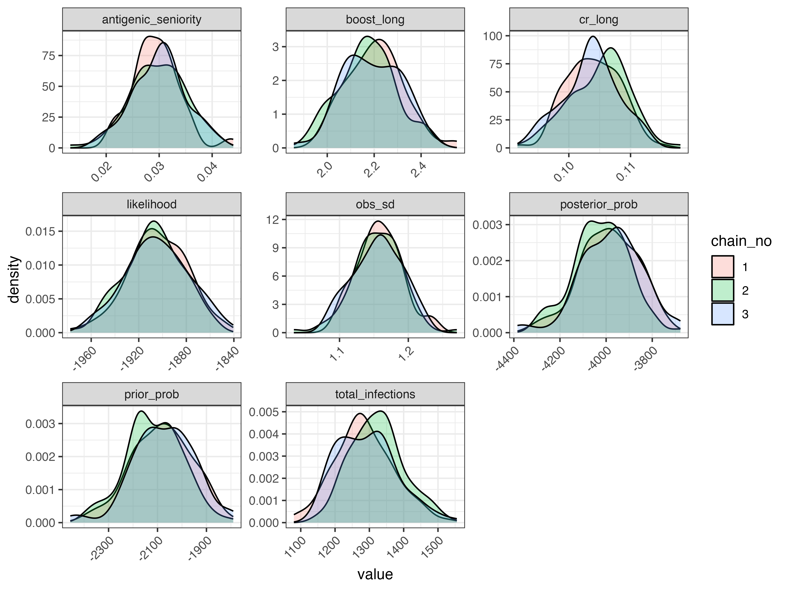
knitr::kable(res$all_diagnostics$theta_estimates)| names | median | mean | lower95_CrI | upper95_CrI | ess | Rhat point estimate | Rhat upper CI |
|---|---|---|---|---|---|---|---|
| boost_long | 2.188 | 2.190 | 1.973 | 2.413 | 46.8 | 1.11 | 1.35 |
| antigenic_seniority | 0.030 | 0.030 | 0.020 | 0.040 | 117.6 | 1.10 | 1.32 |
| cr_long | 0.104 | 0.104 | 0.095 | 0.112 | 70.2 | 1.06 | 1.20 |
| obs_sd | 1.157 | 1.156 | 1.089 | 1.224 | 254.6 | 1.02 | 1.06 |
| total_infections | 1296.000 | 1300.076 | 1155.750 | 1475.700 | 49.9 | 1.03 | 1.12 |
| j | population_group | mean | median | lower_quantile | upper_quantile | effective_size | gelman_point | gelman_upper |
|---|---|---|---|---|---|---|---|---|
| 1 | 1 | 79.1 | 80 | 69 | 84.0 | 190.5 | 1.06 | 1.15 |
| 2 | 1 | 28.7 | 8 | 0 | 83.5 | 59.0 | 1.44 | 2.24 |
| 3 | 1 | 54.4 | 73 | 2 | 88.0 | 59.6 | 1.30 | 1.87 |
| 4 | 1 | 19.6 | 16 | 1 | 65.3 | 120.1 | 1.04 | 1.10 |
| 5 | 1 | 20.1 | 16 | 1 | 56.5 | 307.5 | 1.05 | 1.14 |
| 6 | 1 | 13.7 | 12 | 1 | 42.5 | 126.2 | 1.01 | 1.05 |
The model-fit plots compare observed titres with posterior predictions for individuals. The orange regions show posterior uncertainty about infection times, while the titre predictions show whether the antibody model describes the observed cross-sectional measurements.
res$antibody_predictions$p_pointrange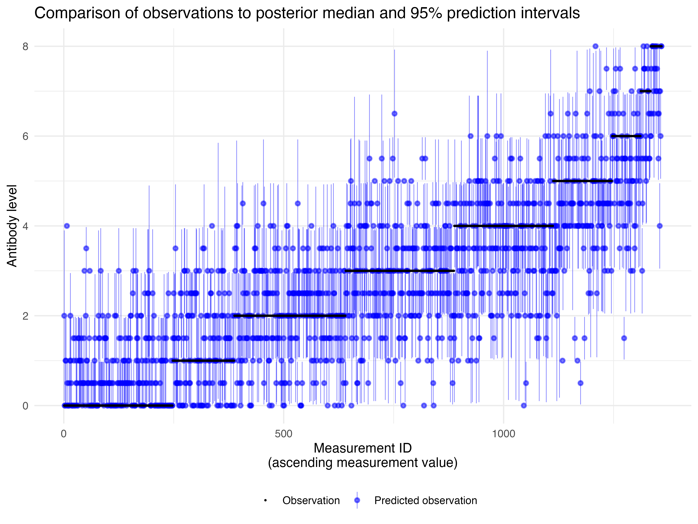
res$antibody_predictions$p_hist_draws
#> `stat_bin()` using `bins = 30`. Pick better value `binwidth`.
#> `stat_bin()` using `bins = 30`. Pick better value `binwidth`.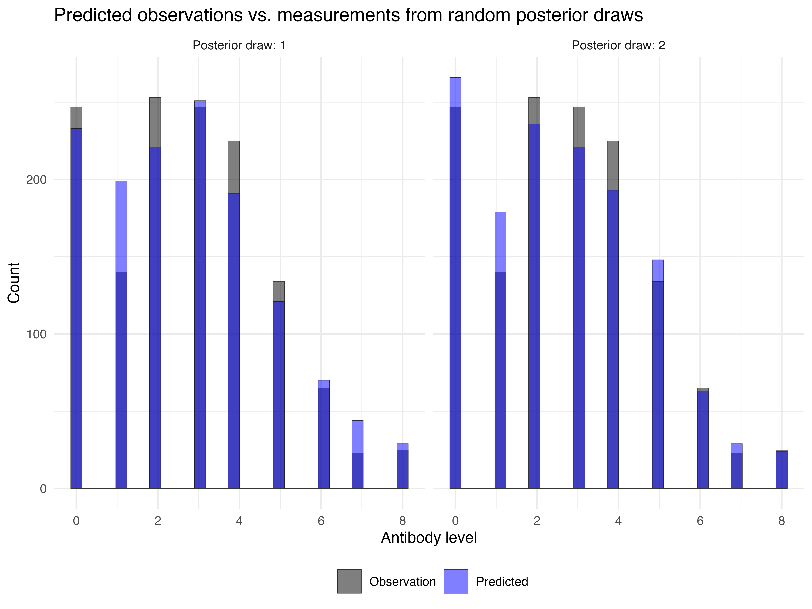
res$antibody_predictions$proportion_correct
#> [1] "Proportion of observations within 95% prediction intervals: 0.29507"
res$plot_fits_cross_sectional[[1]] + facet_wrap(~individual,ncol=3)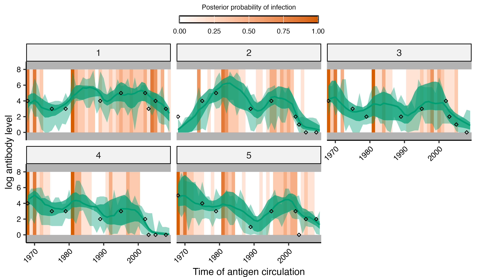
The same individual-level plot can be recreated manually from the saved chains. This is useful when changing the individuals or number of posterior draws without refitting the model.
plot_model_fits(
chain = chains$theta_chain,
infection_histories = chains$inf_chain,
individuals = 1:9,
orientation = "cross-sectional",
settings = serosolver_settings,
expand_to_all_times = FALSE,
expand_to_all_biomarker_ids = TRUE
)[[1]] + facet_wrap(~ individual, ncol = 3)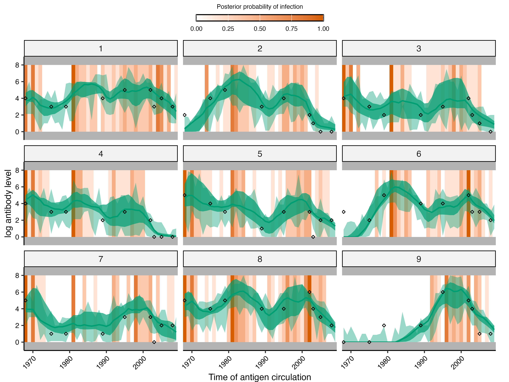
The main estimates are the antibody kinetics, historical attack rates, and posterior infection timings.
res$plot_attack_rates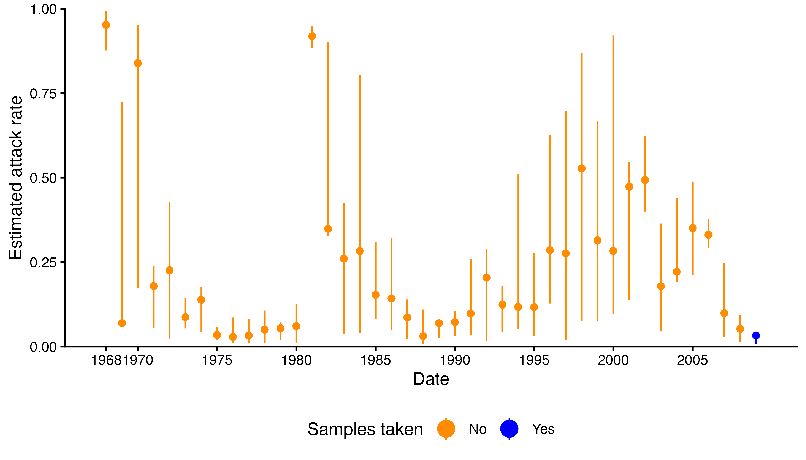
res$plot_antibody_model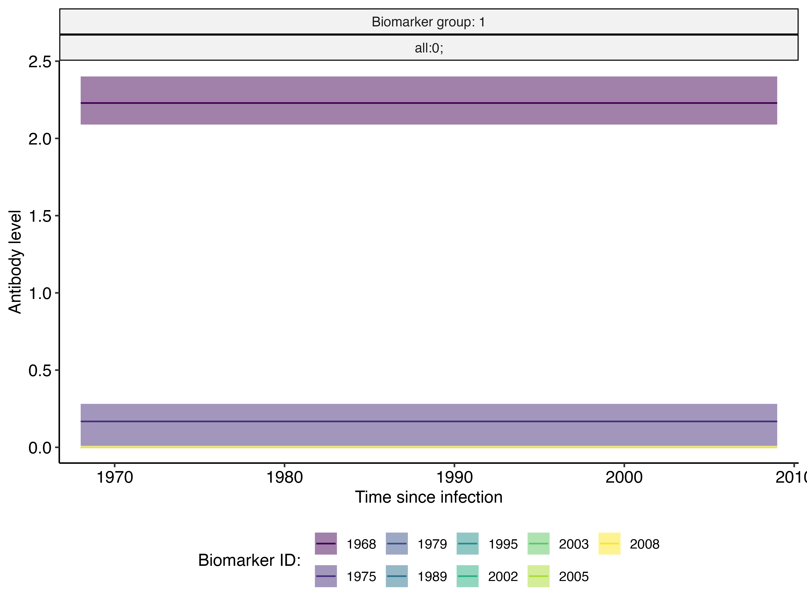
res$all_diagnostics$p_inf_hists$indiv_infections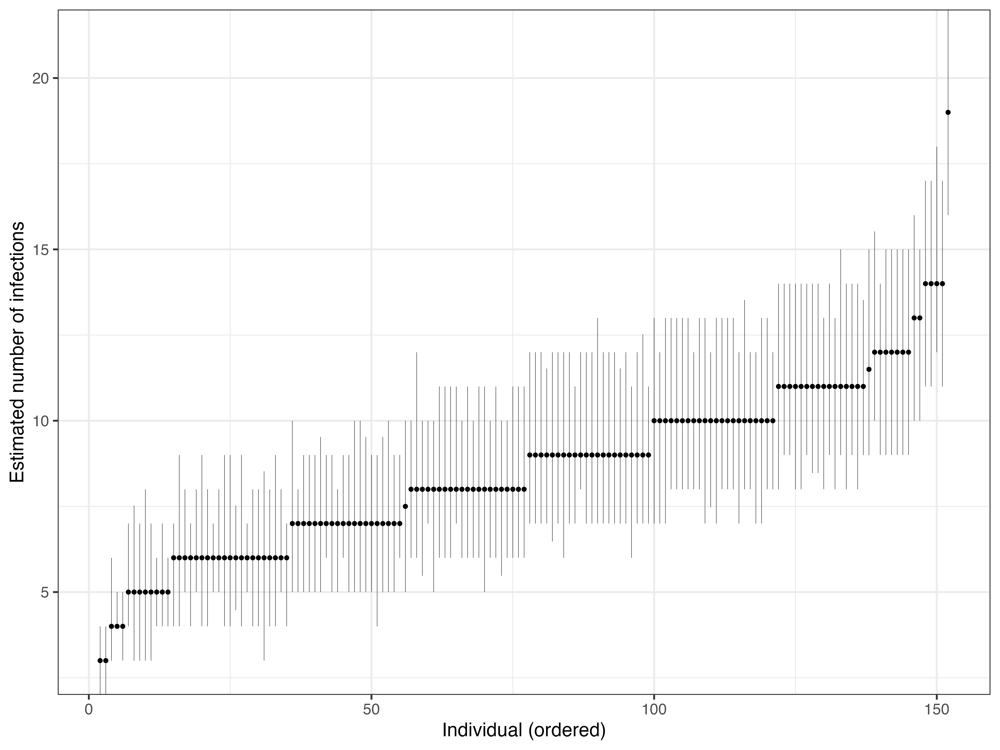
plot_cumulative_infection_histories(
inf_chain = chains$inf_chain,
indivs = 1:25,
possible_exposure_times = possible_exposure_times
)[[2]] +
ggplot2::theme(axis.text.x = ggplot2::element_text(angle = 45, hjust = 1))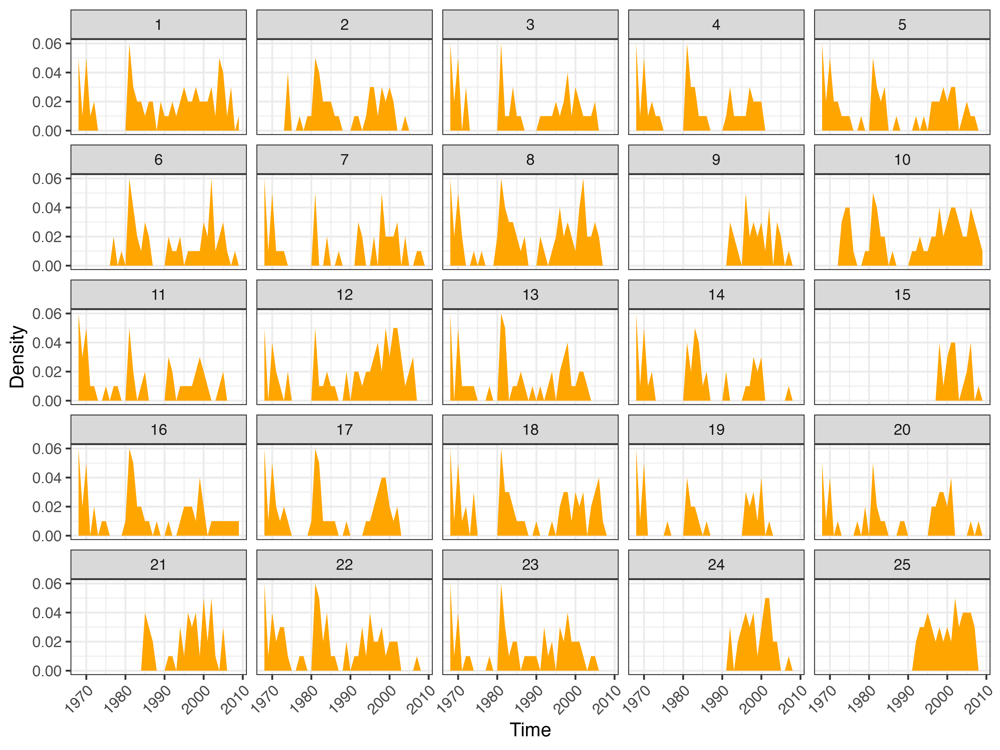
The infection-history chain can also be summarised by age at the possible time of infection. This describes inferred infection frequency across age groups.
chains$inf_chain %>%
as.data.frame() %>%
rename(individual = i, time = j, infection = x) %>%
mutate(time = possible_exposure_times[time]) %>%
left_join(antibody_data %>% select(individual, birth) %>% distinct(), by = "individual") %>%
mutate(age = time - birth) %>%
filter(age >= 0) %>%
mutate(age_group = age %/% 10) %>%
group_by(individual, age_group, samp_no, chain_no) %>%
summarise(infection_freq = sum(infection), .groups = "drop") %>%
group_by(individual, age_group) %>%
summarise(mean_inf_freq = mean(infection_freq), .groups = "drop") %>%
ggplot() +
geom_boxplot(aes(x = age_group, y = mean_inf_freq, group = age_group)) +
xlab("Age at possible infection") +
ylab("Mean number of infections") +
theme_minimal()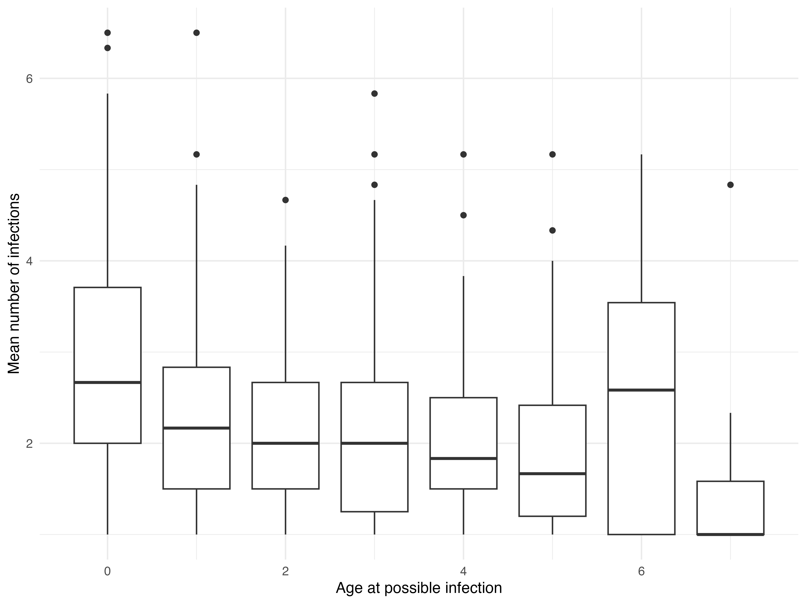
Simulation recovery checks whether the inference machinery can recover known parameter values. Data are simulated from the model using known values and then refitted using the same workflow as the real data.
## Use the fitted parameter estimates to define the simulated antibody model.
best_pars <- get_best_pars(chains$theta_chain)
best_pars <- best_pars[names(best_pars) != "total_infections"]
sim_par_tab <- par_tab
sim_par_tab$values <- best_pars[match(sim_par_tab$names, names(best_pars))]
## Fixed model options are not stored in the theta chain, so retain them.
sim_par_tab$values[sim_par_tab$names == "exponential_waning"] <-
par_tab$values[par_tab$names == "exponential_waning"]
## Simulate annual attack rates and a cross-sectional serosurvey.
sim_attack_rates <- simulate_attack_rates(
infection_years = possible_exposure_times,
mean_par = 0.15,
sd_par = 0.25,
n_groups = 1
)
simulated_data <- simulate_data(
par_tab = sim_par_tab,
n_indiv = nrow(antibody_data %>% select(individual) %>% distinct()),
antigenic_map = antigenic_map,
sampling_times = sample_year,
nsamps = 1,
attack_rates = sim_attack_rates,
data_type = "discrete",
measured_biomarker_ids = unique(antibody_data$biomarker_id)
)
plot_antibody_data(
simulated_data$antibody_data,
possible_exposure_times = possible_exposure_times,
n_indivs = 16,
study_design = "cross-sectional",
infection_histories = simulated_data$infection_histories
) + facet_wrap(~ individual, ncol = 4)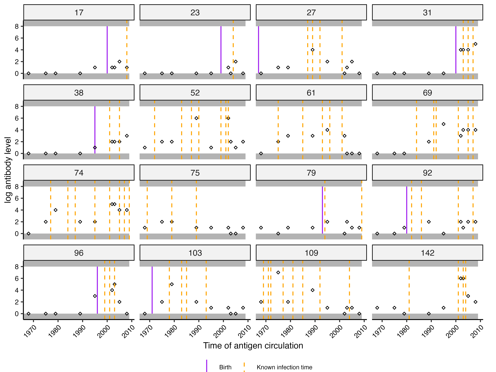
The simulated data are fitted with shorter MCMC settings for this vignette. The cache is used automatically after the first successful run.
sim_res <- serosolver(
par_tab = sim_par_tab,
antibody_data = simulated_data$antibody_data,
antigenic_map = antigenic_map,
possible_exposure_times = possible_exposure_times,
filename = sim_mcmc_file,
prior_func = prior_func,
data_type = "discrete",
n_chains = 3,
parallel = TRUE,
mcmc_pars = sim_mcmc_pars,
verbose = TRUE
)The parameter estimates can be compared with the values used to simulate the data. Recovery is good when posterior medians are close to the true values and the 95% credible intervals generally include them.
sim_res$all_diagnostics$theta_estimates %>%
filter(names != "total_infections") %>%
left_join(
sim_fit_par_tab %>% select(names, true = values),
by = "names"
) %>%
select(names, true, median, lower95_CrI, upper95_CrI) %>%
knitr::kable(digits = 3)| names | true | median | lower95_CrI | upper95_CrI |
|---|---|---|---|---|
| boost_long | 2.312 | 2.146 | 1.842 | 2.456 |
| antigenic_seniority | 0.027 | 0.027 | 0.003 | 0.047 |
| cr_long | 0.103 | 0.107 | 0.098 | 0.118 |
| obs_sd | 1.131 | 1.127 | 1.044 | 1.222 |
The attack-rate estimates should be close to the simulated attack rates:
plot_attack_rates(
sim_chains$inf_chain,
settings = sim_res$settings,
true_ar = simulated_data$attack_rates,
plot_den = FALSE
)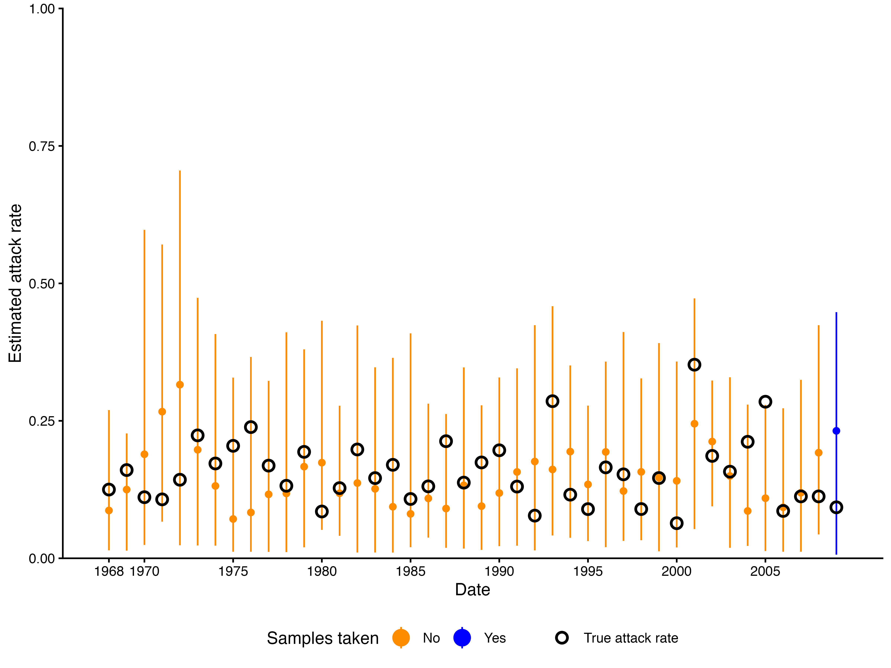
The cumulative infection-history plot gives a second check on the timing of infections. Dashed lines show the true cumulative number of infections for each simulated individual; these should generally lie within the orange posterior intervals.
plot_cumulative_infection_histories(
inf_chain = sim_chains$inf_chain,
indivs = 1:9,
real_inf_hist = simulated_data$infection_histories,
possible_exposure_times = possible_exposure_times,
number_col = 3,
pad_chain = TRUE
)[[1]] +
ggplot2::theme(axis.text.x = ggplot2::element_text(angle = 45, hjust = 1))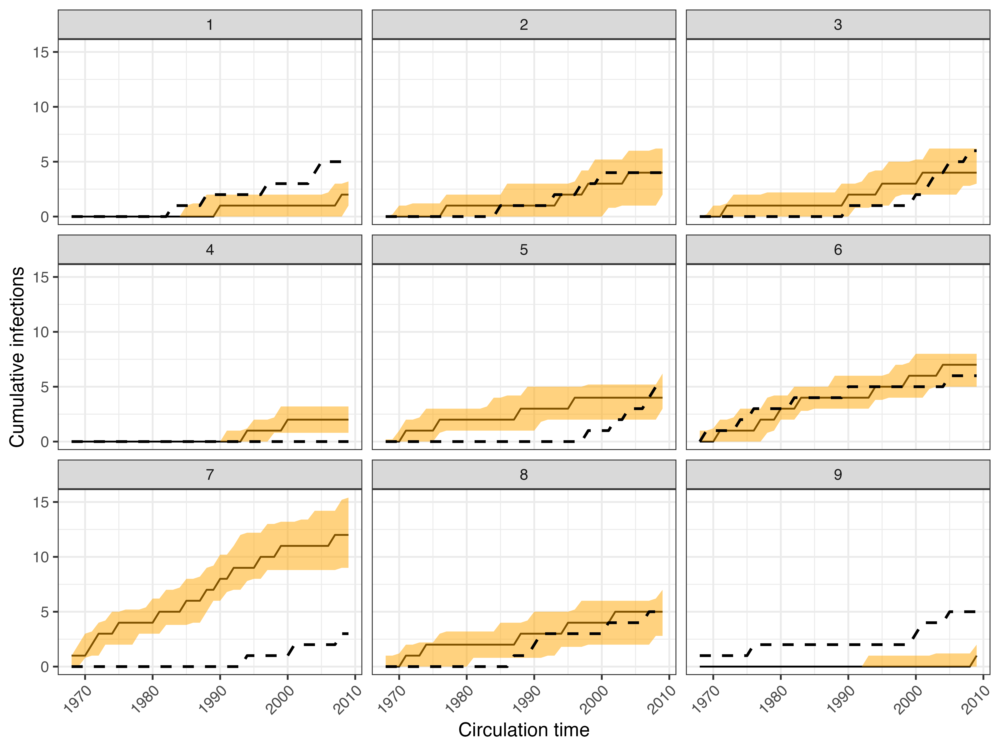
Finally, compare the fitted model with the simulated observations and true infection histories. In this plot, dashed lines show the true infection times. They should generally pass through dark orange regions, which indicate a high posterior probability of infection.
plot_model_fits(
sim_chains$theta_chain,
sim_chains$inf_chain,
known_infection_history = simulated_data$infection_histories,
individuals = 1:9,
orientation = "cross-sectional",
settings = sim_res$settings,
expand_to_all_times = FALSE,
expand_to_all_biomarker_ids = TRUE,
p_ncol = 1
)[[1]] + facet_wrap(~ individual, ncol = 3)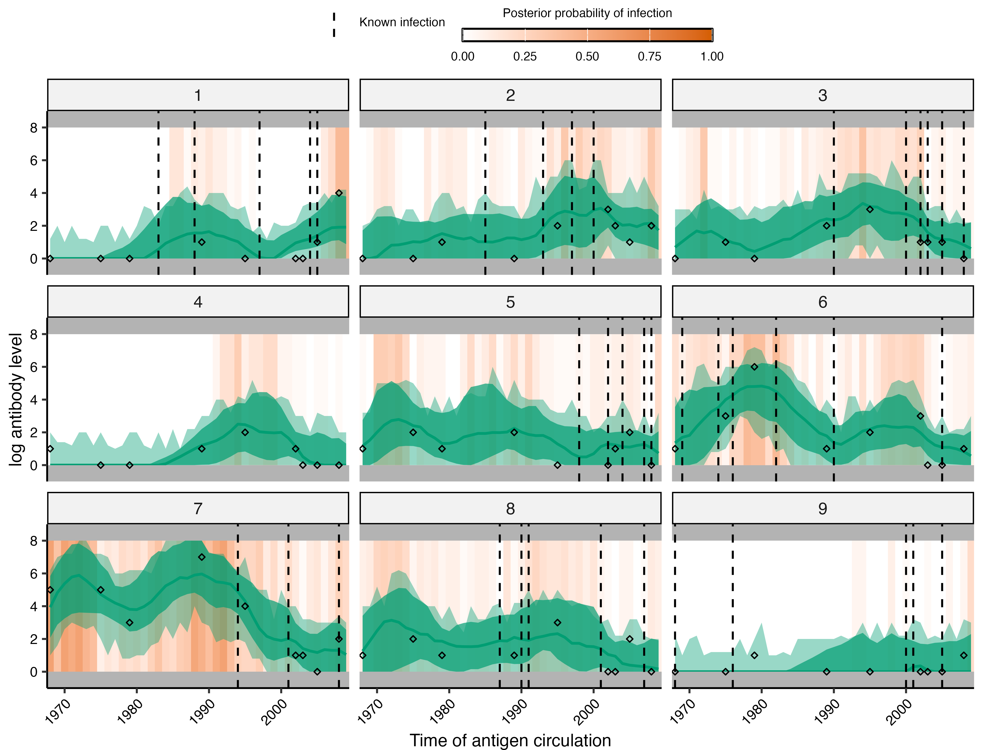